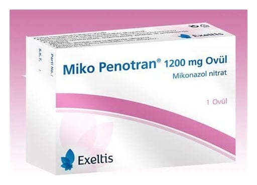

Miko-Penotran 1200 mg Ovül, 1 Adet

Ne için kullanılır
KT · Bölüm 1e MİKO-PENOTRANO, vajina içine (hazneye) yerleştirilmek suretiyle uygulanan ovül formunda bir ürün olup, antifungaller (mantarlara karşı etkili) olarak adlandırılan ilaç grubuna dahildir.
e Beyazımsı renkli her bir ovül etkin madde olarak 1200 mg mikonazol nitrat içermektedir. MİKO-PENOTRANG), 1 adet ovül içeren ambalajda kullanıma sunulmaktadır.
e MİKO-PENOTRANG, vajinada (haznede) kaşıntı, yanma, anormal akıntı, şişme ve kızarma gibi belirtilerle seyreden, bazı mantarların yol açtığı vajina iltihabının (kandidal vulvovajinit) tedavisinde kullanılır.
-1-